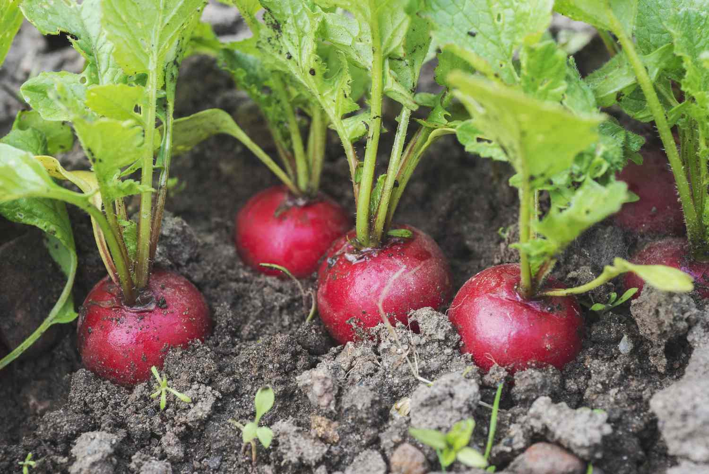
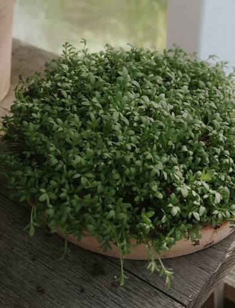
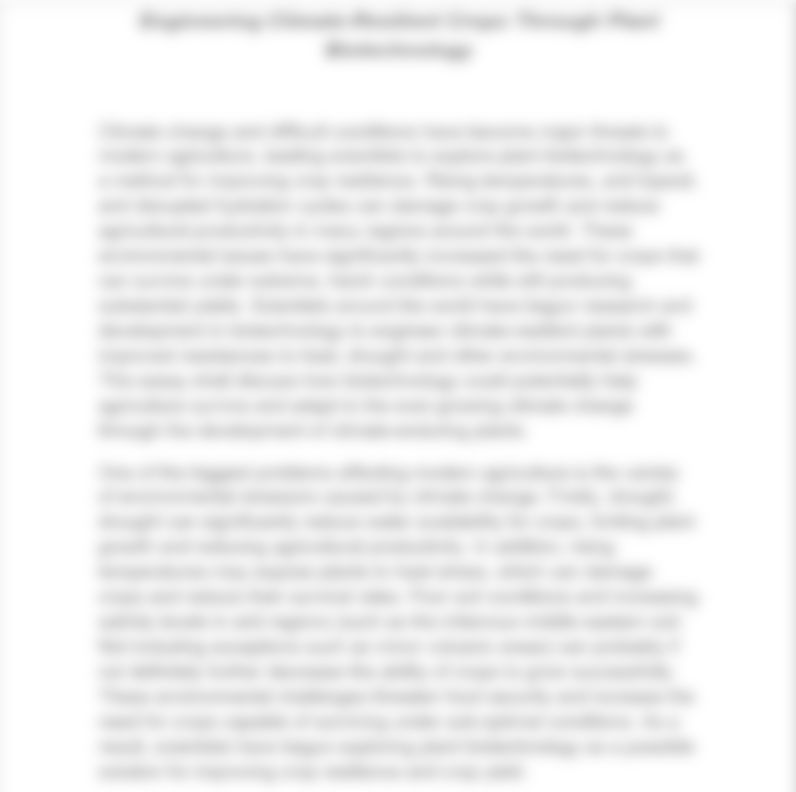
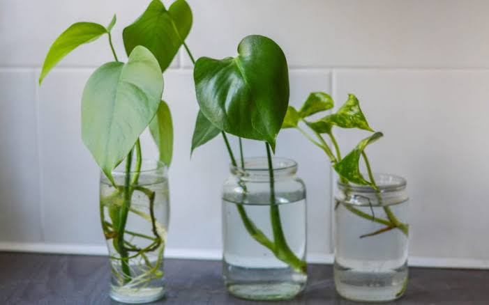

Ficus benjamina 'variegata' physiological experiment
Testing how a Ficus benjamina 'variegata' handles stress, and how it can recover from said stress across a long time period. (FAILED)
Welcome to the project registry. Use this registry to isolate and filter all types of projects that I have conducted. Select the following filters to view specific project types or statuses.
Testing how a Ficus benjamina 'variegata' handles stress, and how it can recover from said stress across a long time period. (FAILED)

An experimental study of radish growth under documented growing conditions.

An experimental project observing the growth and development of garden cress.

A long-term project recording fifty botanical observations across plants, places, and changing conditions.

A written research paper bringing together observations and findings from the garden cress project.

An independent project documenting plant propagation methods, progress, and outcomes over time.